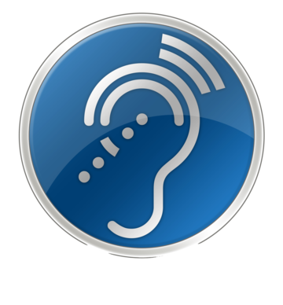
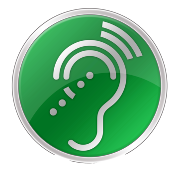

فاعلية بيئة تعلم مدمجة تكيفية وفقًا لمستوى الإعاقة السمعية في تنمية مفاهيم الحاسب الآلي لدى تلاميذ الحلقة الثانية من التعليم الأساسي
The Effectiveness of an Integrated Learning Environment Adapted to the Level of Hearing Disability in Developing Computer Concepts
مقدم بواسطة: هالة حسني محمد كمال
التعليمات (دليل الاستخدام)
كيف تستخدم البيئة؟
- من صفحة "المحتوى" اختر الأيقونة التي تناسبك: ضعاف السمع أو متوسطي السمع.
- استخدم زر "التالي" للانتقال بين أجزاء الدرس، وزر "السابق" للرجوع.
- بعد انتهاء الدرس اضغط "ابدأ الاختبار" للتأكد من فهمك.
- الأزرار في نفس المكان دائمًا حتى يسهل عليك تذكرها.
ملاحظات للمعلم / أخصائي التربية الخاصة
- يمكن استخدام البيئة بشكل فردي مع كل تلميذ حسب درجة إعاقته السمعية.
- يُفضَّل مرافقة التلميذ في أول استخدام لتوضيح أزرار التنقل.
- مسار "متوسطي السمع" يعتمد بشكل أكبر على الوسائط البصرية ولغة الإشارة، بينما مسار "ضعاف السمع" يضيف دعمًا صوتيًا مع تكبير الصوت والترجمة النصية.
- يمكن للمعلم متابعة نتيجة الاختبار مع كل تلميذ بعد انتهائه.
المقدمة
تُعد مفاهيم الحاسب الآلي من المفاهيم الأساسية في المناهج الدراسية المعاصرة، لما لها من دور في إعداد التلاميذ لمتطلبات العصر الرقمي، وتنمية مهارات التفكير المنطقي وحل المشكلات.
ويواجه تلاميذ الحلقة الثانية من التعليم الأساسي ذوو الإعاقة السمعية صعوبات متعددة في تعلم هذه المفاهيم نظرًا لاعتماد المادة العلمية بشكل كبير على الشرح اللفظي والمصطلحات التقنية. من هنا تأتي أهمية تصميم بيئة تعلم مدمجة تكيفية تراعي مستوى الإعاقة السمعية لدى كل تلميذ، وتقدّم المحتوى بصورة بصرية غنية (نصوص، صور، رسوم توضيحية، فيديوهات مترجمة بلغة الإشارة) بدلًا من الاعتماد على الحاسة السمعية وحدها.
تجمع هذه البيئة بين التعلم المباشر داخل الفصل والتعلم الإلكتروني عبر الإنترنت، مع تكييف طريقة عرض المحتوى وفقًا لدرجة الإعاقة السمعية لدى المتعلم، بهدف تحسين فهمه لمفاهيم الحاسب الآلي وزيادة دافعيته للتعلم.
أهداف البحث
أولًا: الأهداف الوجدانية
| م | الهدف |
|---|---|
| 1 | أن يشعر التلميذ بالفخر والإنجاز عند تحقيق الأهداف. |
| 2 | أن يعزز شعور الإنجاز بشعور الإيجابية والاستمرارية في التعلم. |
| 3 | أن يتطور الشعور بالثقة بالنفس لديه. |
| 4 | أن يظهر الرضا والسعادة خلال تجارب التعلم. |
ثانيًا: الأهداف المهارية
| م | الهدف |
|---|---|
| 5 | أن يتعلم التلميذ مهارات تنظيم الوقت وإدارته. |
| 6 | أن يحسن مهارة الانتباه والتركيز لديه. |
| 7 | أن يحسن مهاراة الإدراك السمعي. |
| 8 | أن يحسن مهارة الإدراك البصري لديه. |
| 9 | أن يحسن مهارة الأداء الحركي - المكاني لديه. |
| 10 | أن يتمكن من تحسين مهارات الاتصال الشفوي. |
| 11 | أن يتمكن من تحسين مهارات الاتصال الكتابي. |
| 12 | أن يطور مهارات التحليل والتفكير الناقد. |
ثالثًا: الأهداف المعرفية
| م | الهدف |
|---|---|
| 13 | أن يتعرف التلميذ على المفاهيم التعليمية بشكل مبسط. |
| 14 | أن يستطيع تطبيق المفاهيم التعليمية في سياقات واقعية. |
| 15 | أن يتمكن من استخدام المعرفة في حل المشكلات اليومية. |
المحتوى
اختر مسارك المناسب:

ضعاف السمع
شرح بصري: فيديو برسوم متحركة وكتابة على السبورة.

متوسطي السمع
شرح صوتي، مع التحكم في مستوى الصوت والاتصال بسماعة بلوتوث.
اختبار المفاهيم
1. ما هو الحساس؟
2. أي من التالي يمكن أن يقيسه الحساس؟
3. ما وظيفة حساس الضوء في الموبايل؟
4. ماذا يحدث عند الاقتراب من باب به حساس حركة؟
5. ما وظيفة حساس الحرارة في التكييف؟
6. أي من التالي نوع من الحساسات؟
7. لماذا الحساسات مهمة؟
8. أين تُستخدم الحساسات؟
9. ماذا يفعل الحساس بعد ملاحظة الشيء؟
10. ماذا يحدث بدون الحساسات؟
اتصل بنا
الباحثة: هالة حسني محمد كمال - أخصائية اجتماعية
تحت إشراف:
أ.م.د محمود مصطفى عطية - أستاذ تكنولوجيا تعليم مساعد، كلية التربية، جامعة عين شمس
د. سمر رجب حافظ - مدرس قسم تربية خاصة، كلية التربية، جامعة عين شمس
الجهة: كلية التربية - جامعة عين شمس - قسم المناهج وطرق التدريس
البريد الإلكتروني: halahosny0000@gmail.com